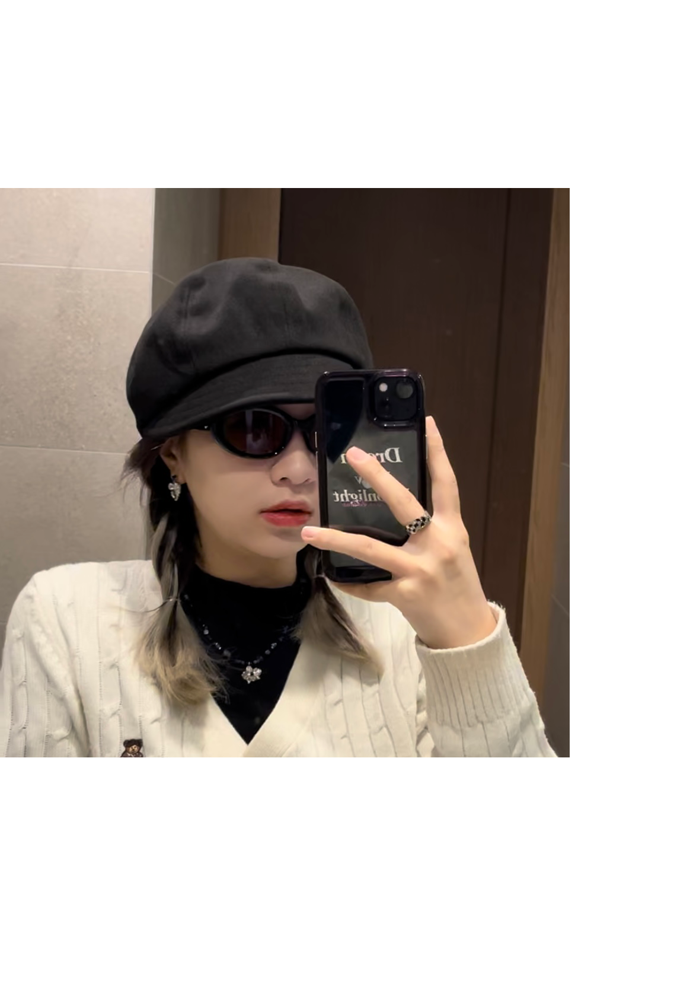

Ceci Huang

Summary
I am a hard working designer who is willing to learn all kinds of knowledge.
I am good at modeling, UI design and motion design.
I would like to work on different projects and collaborate with people from different fields.
Education
- Bachelor of Visual Communication Design
University of Shanghai for Science and Technolog
(2017-2021)
Work Experience
Graphic Designer - HuNanCATV
- Designed web posters for variety events
- Designing Live Streaming Scenes and Posters
Multimedia Designer - The Shine Fashion
Intern - Hunan Broadcasting System,HBS
- Assistance in the broadcasting of television programmes
- Organize receipts for programs
Skills
- figma/sketch 🔸🔸🔸🔸
- Aadobe photoshop 🔸🔸🔸🔸🔸
- Adobe Illustrator 🔸🔸🔸🔸🔸
- Adobe After Effect s🔸🔸🔸
- Adobe Premiere 🔸🔸🔸🔸
- Cinema 4D 🔸🔸🔸🔸
- Blender 🔸🔸🔸
- Programing 🔸🔸
Other